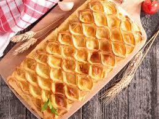

Feuillantine Comtoise

Spécialité revisitée de la Franche-Comté, la feuillantine comtoise en version salée propose une interprétation moderne et gourmande d’un classique régional. Elle met à l’honneur les produits du terroir en jouant sur les textures et les contrastes de saveurs. Composée de fines couches croustillantes, la feuillantine accueille une garniture généreuse à base de fromages comtois, comme le comté ou la cancoillotte, associés à des ingrédients simples tels que la charcuterie ou les légumes de saison. Ce mélange offre un équilibre parfait entre croquant et fondant. Facile à préparer, cette recette convient aussi bien en entrée qu’en plat léger. Elle illustre une cuisine accessible, où quelques produits bien choisis suffisent à créer un plat savoureux et convivial. Servie chaude, la feuillantine dévoile toute sa richesse aromatique. Le fromage fond délicatement entre les couches croustillantes, apportant une texture onctueuse et un goût réconfortant. Idéale pour un repas entre amis ou en famille, elle incarne une cuisine de partage, fidèle à l’esprit comtois. Chaque bouchée révèle la simplicité et l’authenticité d’un plat pensé pour le plaisir. Pour accompagner cette feuillantine salée, on privilégiera un vin blanc sec du Jura, dont la fraîcheur mettra en valeur les saveurs du fromage. Pour une alternative plus légère, une salade verte croquante apportera une touche de fraîcheur bienvenue.